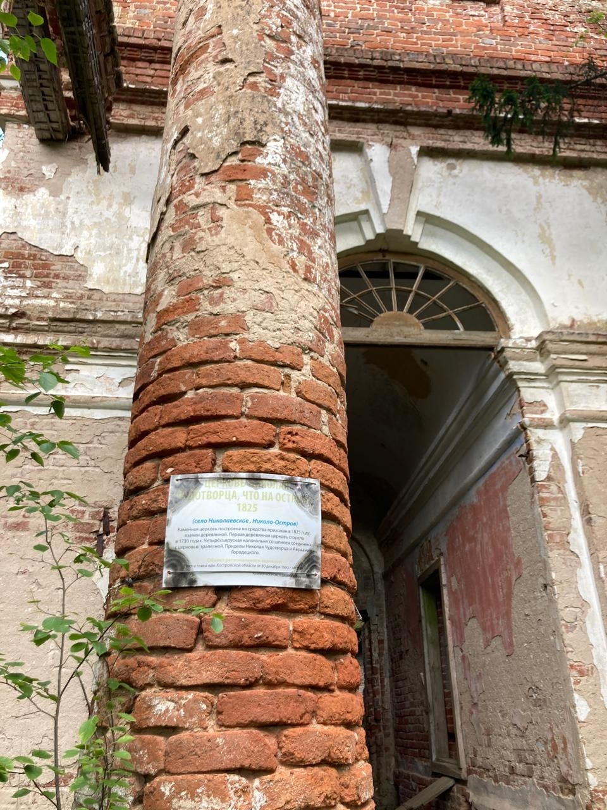
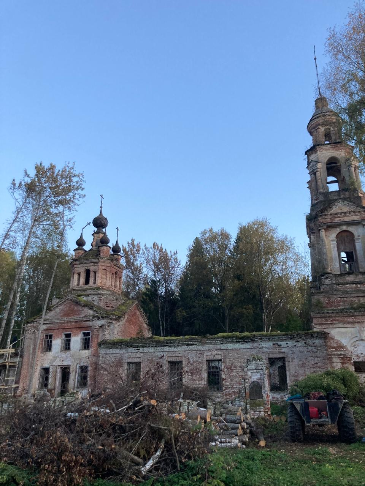

Церковь Николая Чудотворца
Обычно храмы в сельской местности строились «всем миром». Примером является церковь Николая Чудотворца, Никола – остров урочище Чухломской уезд, Костромской области.


Обычно храмы в сельской местности строились «всем миром». Примером является церковь Николая Чудотворца, Никола – остров урочище Чухломской уезд, Костромской области.